전기공사기사 (2005-09-04 기출문제)
1과목: 전기응용 및 공사재료
1. 완전확산면의 광속발산도가 3140[rlx]일때 휘도는 몇[cd/cm2]인가?
- 0.1
- 3.14
- 628
- 1000
(정답률: 48%)

2. 사이리스터의 응용에 대한 설명이 잘못된 것은?
- AC-DC변환이 가능하다.
- 위상제어에 의해 AC전력 제어가 된다.
- AC전원에서 가변주파수 AC 변환이 가능하다.
- DC전력의 증폭인 컨버터가 가능하다.
(정답률: 92%)
3. 도체에 고주파 전류를 통하면 전류가 표면에 집중하는 현상이고, 금속의 표면열처리에 이용하는 효과는?
- 표피효과
- 톰손효과
- 핀치효과
- 제백효과
(정답률: 92%)
4. 고전압 대전력 정류기로서 가장 적당한 것은?
- 회전 변류기
- 수은 정류기
- 전동 발전기
- 벨트로
(정답률: 79%)
5. 무정형 탄소전극을 2500[℃]정도의 고온으로 가열하여 이를 흑연화시키는데 이용되는 로 는?
- 발열체로
- 카아버런덤로
- 지로식 전기로
- 흑연화로
(정답률: 88%)
6. 전지의 국부작용을 방지하는 방법은?
- 완전 밀폐
- 감극제 사용
- 니켈 도금
- 수은 도금
(정답률: 75%)
7. 복진지란? (문제 오류로 실제 시험에서는 다, 라번이 정답처리 되었습니다. 여기서는 다번을 누르면 정답 처리 됩니다.)
- 침목의 이동을 막는 것
- 궤도의 진동을 막는 것
- 궤도가 열차의 진행방향으로 이동하는 것을 방지하는 것
- 궤도가 열차의 진행방향과 반대방향으로 이동함을 방지하는 것
(정답률: 63%)
8. 다음 발열체 중 최고 사용온도가 가장 높은 것은?
- 니크롬 제1종
- 니크롬 제2종
- 철-크롬 제1종
- 탄화규소 발열체
(정답률: 84%)
9. 그림과 같이 높이 5[m]의 가로등 A, B가 24[m]의 간격으로 배치되어 있고, 그 중앙 P점에서 조도계를 A를 향하게 하여 측정한 법선조도가 1[lx],B로 향하게 하여 측정한 법 선조도가 0.8[lx]가 되었다. P점의 수평면 조도를 구하시오.
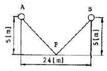
- 1.8[lx]
- 1.66[lx]
- 0.69[lx]
- 4.32[lx]
(정답률: 52%)
10. 전기기기의 절연종류별로 따른 최고 허용온도를 나타낸 것 중 맞는 것은?
- A종 - 155℃
- E종 - 130℃
- B종 - 120℃
- Y종 - 90℃
(정답률: 85%)
11. 배전선로용 콘크리트전주의 크로스암(ㄱ형 완철 및 경완철)을 설치하기 위하여 사용하는 금구류는?
- 완금 밴드
- 암타이 밴드
- 행거 밴드
- 인류스트랍
(정답률: 67%)
12. CN / CV 기호는 22.9kV 가교 폴리에틸렌 절연 비닐 시스동심 중성선 전력케이블이다. 기호에서 CN의 의미는?
- 동심 중성선
- 비닐(PVC)시스
- 폴리에틸렌(PE)시스
- 가교 폴리에틸렌(XLPE)절연
(정답률: 80%)
13. 뇌격의 단자로 하기 위하여 공중에 돌출시킨 금속체는?
- 돌침
- 피뢰침
- 케이지
- 피로도선
(정답률: 74%)
14. 유니버셜에는 다음과 같은 주철제의 종류가 있다. 종류의 형이 아닌 것은?
- LB형
- G형
- T형
- LL형
(정답률: 78%)
15. 배선용 차단기에서 최대 정격 전류로 제품의 크기를 나타내는 용어는?
- 암페어 프레임
- 암페어 트립
- 전압 트립
- 개방 투입
(정답률: 71%)
16. 고압 또는 특별고압 전로중 기계 기구 및 전선을 보호하기 위하여 필요한 곳에는 무엇을 시설하여야 하는가?
- 저항기
- 전력용 콘덴서
- 리액터
- 과전류 차단기
(정답률: 95%)
17. HID램프가 아닌 것은?
- 고압 수은 램프
- 고압나트륨램프
- 고압 옥소 램프
- 메탈할라이드 램프
(정답률: 79%)
18. 도전 재료가 갖추어야 할 구비 조건이 아닌 것은?
- 저항률이 클 것
- 인장 강도가 클 것
- 내식성이 클 것
- 도전율이 클 것
(정답률: 83%)
19. 2종 금속제 가요전선관의 크기를 호칭하는 방법은?
- 안지름에 가까운 홀수, 짝수 사용
- 안지름에 가까운 짝수 사용
- 금속두께에 가까운 홀수 사용
- 금속두께에 가까운 짝수 사용
(정답률: 50%)
20. 최고사용온도는 180[℃]이며 운모, 석면, 유리 섬유 등의 재료를 규소 수지 등, 특히 내열성이 우수한 접착재료과 같이 구성한 종류는?
- H종
- Y종
- F종
- B종
(정답률: 90%)
2과목: 전력공학
21. 그림은 유입차단기의 구조도이다. A의 명칭은?
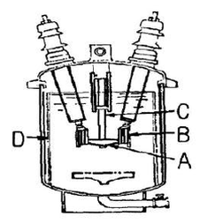
- 절연 liner
- 승강간
- 가동접촉자
- 고정접촉자
(정답률: 7%)
22. 3상 1회선의 가공 송전선로가 있다. 수전단을 개방한 상태로 3선을 일괄한 것과 대지 사이의 정전용량을 측정한 것이 C1[μF]이고, 2선을 접지하고 남은 1선과 대지사이의 정전용량을 측정한 것이 C2[μF]라 한다. 이 송전선로의 작용 정전용량은 몇 μF 인가?
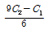
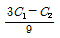
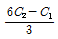
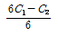
(정답률: 4%)
23. 20개의 가로등이 500m 거리에 균등하게 배치되어 있다. 한 등의 소요 전류가 4A 이고 전선의 단면적이 38mm2, 도전율이 56m/Ω.mm2 라면 한쪽 끝에서 110V로 급전할 때 최종 전등에 가해지는 전압은 약 몇 V 인가?
- 91
- 96
- 101
- 106
(정답률: 4%)
24. △결선의 3상3선식 배전선로가 있다. 1선이 지락하는 경우 건전상의 전위 상승은 지락 전의 몇 배가 되는가?
- √3/2
- 1
- √2
- √3
(정답률: 12%)
25. 환상식(loop) 배전방식에 대한 설명으로 틀린 것은?(오류 신고가 접수된 문제입니다. 반드시 정답과 해설을 확인하시기 바랍니다.)
- 증설이 용이하다.
- 전압변동이 적다.
- 변압기의 부하 배분이 균일하게 된다.
- 부하 증가에 대한 융통성이 크다.
(정답률: 7%)
26. 전력선에 영상전류가 흐를 때 통신선로에 발생되는 유도 장해는?
- 고조파유도장해
- 전력유도장해
- 정전유도장해
- 전자유도장해
(정답률: 10%)
27. 원자력발전소에서 감속재로 사용되지 않는 것은?
- 경수
- 중수
- 흑연
- 카드뮴
(정답률: 10%)
28. 증기의 엔탈피란?
- 증기 1kg의 잠열
- 증기 1kg의 보유열량
- 증기 1kg의 현열
- 증기 1kg의 증발열을 그 온도로 나눈 것
(정답률: 6%)
29. 벌전용량 9800kW의 수력발전소의 최대 사용 수량이 10m3/s 일 때, 유효낙차는 몇 m 인가?
- 100
- 125
- 150
- 175
(정답률: 6%)
30. 중성점 고저항접지방식의 평행 2회선 송전선로의 지락사고의 차단에 사용되는 계전기는?
- 선택접지계전기
- 역상계전기
- 거리계전기
- 과부하계전기
(정답률: 12%)
31. 배전용 변전소의 주변압기로 주로 사용되는 것은?
- 단권변압기
- 삼권선변압기
- 체강변압기
- 체승변압기
(정답률: 7%)
32. 공통 중성선 다중접지방식의 특성에 대한 설명으로 옳은 것은?
- 고저압 혼촉시의 저압선 전위 상승이 낮다.
- 합성 접지저항이 매우 높다.
- 선전상의 전위 상승이 매우 높다.
- 고강도의 지락 보호가 용이하다.
(정답률: 7%)
33. 재압 네트워크 배전방식에 사용되는 네트워크 프로텍터(Network protector)의 구선 요소가 아닌 것은?
- 계기용 변압기
- 전력방향 계전기
- 저압용 차단기
- 퓨즈
(정답률: 6%)
34. 소호리액터를 송전계통에 사용하면 리액터의 인덕턴스와 선로의 정전용량이 어떤 상태로 되어 지락전류를 소멸시키는가?
- 병렬공진
- 직렬공진
- 고임피던스
- 저임피던스
(정답률: 6%)
35. 송전선로에 매설지선을 설치하는 목적은?
- 직격뇌로부터 송전선을 차폐보호하기 위하여
- 철탑 기초의 강도를 보강하기 위하여
- 현수애자 1연의 전압 분담을 균일화 하기 위하여
- 철탑으로부터 송전선로로의 역섬락을 방지하기 위하여
(정답률: 7%)
36. 케이블 금속 외피의 부식을 방지하기 위한 방법 중 선택 배류법에 대한 설명으로 옳은 것은?
- 매설 금속의 양 끝단에 선택배류기를 접속하여 매설 금속의 전위가 전철 레일에 대해 가장 낮게, 그리고, 단 시간에 걸쳐 정전위가 되는 장소에 설치하는 것이 효과적이다.
- 전철 레일에 선택배류기를 접속한 것으로 선택배류기는 매설 금속의 전위가 전철 레일에 대해 가장 낮게, 그리고 장시간에 걸쳐 정전위가 되는 곳에 설치하는 것이 효과적이다.
- 매설 금속과 대지사이에 선택배류기를 접속한 것으로 선택배류기는 매설 금속의 전위가 전철 레일에 대해 가장 높게, 그리고 단시간에 걸쳐 정전위가 되는 곳에 설치하는 것이 효과적이다.
- 매설 금속과 전철 레일사이에 선택배류기를 접속한 것으로 선택배류기는 매설금속의 전위가 전철 레일에 대해 가장 높게, 그리고 장시간에 걸쳐 정전위가 되는 곳에 설치하는 것이 효과적이다.
(정답률: 5%)
37. 3상 송전선로에 변압기가 그림과 같이 Y-△로 결선되어 있고, 1차측에는 중선점이 접지되어 있다. 이 경우 영상전류가 흐르는 곳으로 옳은 것은?
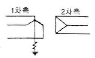
- 2차측 선로
- 2차측 선로 및 접지선
- 차측 선로, 접지선 및 △회로 내부
- 1차측 선로, 접지선, △회로 내부 및 2차측 선로
(정답률: 4%)
38. 인터록(Interlock)에 대한 설명 중 옳은 것은?
- 차단기가 열려있어야만 단로기를 닫을 수 있다.
- 차단기와 단로기는 제각기 열리고 닫힌다.
- 차단기가 닫혀있어야만 단로기를 닫을 수 있다.
- 차단기의 접점과 단로기의 접점이 기계적으로 연결되어 있다.
(정답률: 10%)
39. 그림과 같은 회로의 영상, 정상, 역상임피던스 Z0, Z1, Z2는?
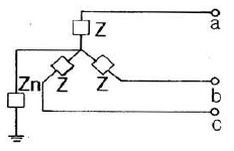
- Z0=3Z+Zn, Z1=3Z, Z2=Z
- Z0=3Zn, Z1=Z, Z2=3Z
- Z0=Z+Zn, Z1=Z2=Z+3Zn
- Z0=Z+3Zn, Z1=Z2=Z
(정답률: 10%)
40. 코로나 현상에 대한 설명으로 틀린 것은?
- 코로나 현상은 전력 손실을 일으킨다.
- 코로나 방전에 의하여 전파 장해가 발생된다.
- 전선 부식의 원인이 된다.
- 코로나 손실은 전원 주파수의 제곱에 비례한다.
(정답률: 10%)
3과목: 전기기기
41. 단자전압 110[V], 전기자 전류 15[A], 전기자 회로의 저항 2[Ω], 정격속도 1800[rpm]으로 전부하에서 운전하고 있는 직류분권 전동기의 토크[N.m]는 약 얼마인가?
- 6.0
- 6.4
- 10.08
- 11.14
(정답률: 7%)
42. 유도전동기의 2차 회로에 2차 주파수와 같은 주파수로 적당한 크기와 위상 전압을 외부에 가하는 속도 제어법은?
- 1차 전압 제어
- 극수 변환 제어
- 2차 저항 제어
- 2차 여자 제어
(정답률: 6%)
43. 함수 P1, P2의 두 3상 유도전동기를 종속접속 하였을 때의 이 전동기의 동기속도는? (단, 전원 주파수는 f1(Hz)이고 직렬종속이다.)
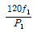
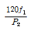
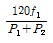
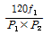
(정답률: 9%)
44. 다음 중 DC서보모터의 회전전기자 구조가 아닌 것은?
- 슬롯(Slot)이 있는 전기자
- 철심이 있고 슬롯(Slot)이 없는 전기자
- 철심이 없는 평판상 프린트 코일형
- 전기자 권선이 없는 돌극형
(정답률: 4%)
45. 동기발전기의 단자부근에서 단락시 단락전류는?
- 서서히 증가하여 큰 전류가 흐른다.
- 처음은 크나, 점차로 감소한다.
- 처음부터 일정한 큰전류가 흐른다.
- 무시할 정도의 적은 전류가 흐른다.
(정답률: 8%)
46. 동기 발전기의 단락비를 계산하는 데 필요한 시험은?
- 무부하 포화 시험과 3상 단락시험
- 정상, 역상, 영상 리액턴스의 측정시험
- 부하 시험과 돌발 단락시험
- 단상 단락 시험과 3상 단락 시험
(정답률: 12%)
47. 3상 변압기를 병렬운전하는 경우에 불가능한 조합은?
- △-△ 와 Y-Y
- △-Y 와 Y-△
- △-Y 와 △-Y
- △-Y 와 △-△
(정답률: 12%)
48. 농형 유도전동기에 주로 사용되는 속도 제어법은?
- 저항 제어법
- 2차 여자법
- 종속 접속법
- 극수 변환법
(정답률: 9%)
49. 동기 방전기의 자기 여자 현상의 방지법이 되지 않는 것은?
- 수전단에 리액턴스를 병렬로 접속한다.
- 수전단에 변압기를 병렬로 접속한다.
- 발전기 여러대를 모선에 병렬로 접속한다.
- 발전기의 단락비를 적게 한다.
(정답률: 7%)
50. 변압기유로 사용되는 O.T 유의 구비 조건이 아닌 것은?
- 점도가 높을 것
- 응고점이 낮을 것
- 인화점이 높을 것
- 절연 내력이 클 것
(정답률: 8%)
51. 다음중 SCR의 기호가 맞는 것은? (단, A는 anode의 약자, K는 cathode의 약자이며 G는 gate의 약자이다.)
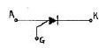
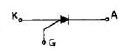
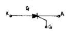
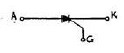
(정답률: 8%)
52. 단상 반차의 정류 효율은?
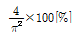
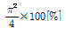
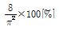
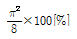
(정답률: 7%)
53. 직류방전기에 직결한 3상 유도 전동기가 있다. 발전기의 부하 100[kW], 효율 90[%]이며 전동기 단자 전압 3300[V], 효율 90[%], 역률90[%]이다. 전동기에 흘러들어가는 전류 [A]의 값은?
- 약2.4
- 약4.8
- 약19
- 약24
(정답률: 3%)
54. 그림은 단상 직권전동기의 개념도이다. C를 무엇이라고 하는가?
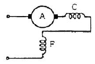
- 제어권선
- 보상권선
- 보극권선
- 단층권선
(정답률: 10%)
55. 어떤 직류 전동기의 유기 기전력이 200[V], 매분 회전수가 1200[rpm]으로 토크 16.2[kg.m]를 발생하고 있을때의 전류 [A]는?
- 약40
- 약60
- 약80
- 약100
(정답률: 6%)
56. 2대의 발전기가 병렬 운전되고 있을 때 B기의 원동기의 조속기를 조정하여 B기의 입력을 증가 시키면 B기에는?
- 90° 진상 전류가 흐른다.
- 90° 지상 전류가 흐른다.
- 부하 전류가 증가한다.
- 부하 전류가 감소한다.
(정답률: 4%)
57. 직류분권 발전기의 브러시를 중성점에서 회전방향으로 이동하면 전압은?
- 상승한다.
- 급속히 상승한다.
- 변하지 않는다.
- 강하한다.
(정답률: 5%)
58. 변압기의 부하가 전압이 일정하고 주파수가 높아지면?
- 철손증가
- 동손증가
- 동손감소
- 철손감소
(정답률: 6%)
59. 50[Hz], 6.3[KV]/210[V], 50[KVA], 정격역률 0.8(지상)의 단상 변압기에 있어서 무부하손은 0.65[%], [%]저항강하는 1.4[%]라 하면 이 변압기의 전부하 효율은?
- 약 96.5[%]
- 약 97.7[%]
- 약 98.6[%]
- 약 99.4[%]
(정답률: 9%)
60. 유도 전동기의 2차 효율은? (단, s는 슬립이다.)
- 1/s
- s
- 1-s
- s2
(정답률: 10%)
4과목: 회로이론 및 제어공학
61. △-결선된 3상 회로에서 상전류가 다음과 같다. 선전류 I1, I2, I3중에서 그 크기가 가장 큰 것은 몇 [A]인가?
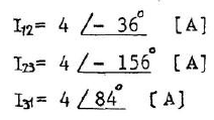
- 2.31
- 4.0
- 6.93
- 8.0
(정답률: 7%)
62. 다음 4단자 회로의 영상 임피던스 Z02는 몇 [Ω]인가?
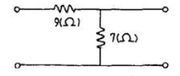
- 12
- 14
- 21/4
- 5/3
(정답률: 7%)
63. 회로의 전압비 전달함수 H(jω)=Vc(jω)/V(jω)는?
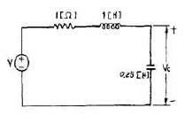
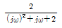
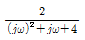
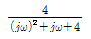
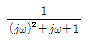
(정답률: 7%)
64. 60[Hz]에서 3[Ω]의 리액턴스를 갖는 자기인덕턴스 L값 및 정전용량 C값을 구하시오.
- 약6[mH], 660[μF]
- 약7[mH], 770[μF]
- 약8[mH], 884[μF]
- 약9[mH], 990[μF]
(정답률: 10%)
65. 다음 회로의 a, b 단자에서 v-i 특성을 옳게 나타낸 것은? (문제 오류로 실제 시험에서는 모두 정답처리 되었습니다. 여기서는 1번을 누르면 정답 처리 됩니다.)
- v=i+1
- v=i-1
- v=i+2
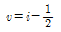
(정답률: 8%)
66. 전류
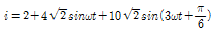
일 때 실효값 [?]는?- √120
- √60
- √30
- √240
(정답률: 9%)
67.
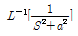
은 어느 것인가?- sin at
- 1/a sin at
- cos at
- 1/a cos at
(정답률: 10%)
68. a, c 양단에 100[V] 전압을 인가시 전류 I가 1[A]흘렸다면 R의 저항은 몇 [Ω]인가?
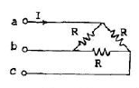
- 50
- 100
- 150
- 200
(정답률: 10%)
69. R-L 직렬회로에서 그 양단에 직류전압 E를 연결한 후 스위치 S를 개방하면L/R[s}후의 전류값[A]은?
- E/R
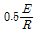
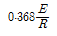
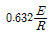
(정답률: 13%)
70. 분포 정수 선로에서 직렬 임피던스 z[Ω], 병렬 어드미턴스 Y[℧]라 할때 선로의 전파정수는?
- √Y/Z
- √Z/Y
- √ZY
- ZY
(정답률: 11%)
71.
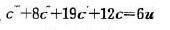
의 미분방정식을 상태방정식-x=Aㆍx+Bㆍu, c=Dㆍx로 표현할 때 옳은 것은?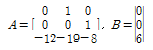
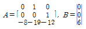
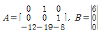
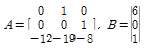
(정답률: 10%)
72. 1차 요소
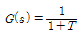
인 제어계의 절점 주파수에서의 이득 [dB]은?- 약 -1[dB]
- 약 -2[dB]
- 약 -3[dB]
- 약 -4[dB]
(정답률: 6%)
73. 전향 이득이 증가 할수록 어떤 변화가 오는가?
- 오버슈트가 증가한다.
- 빨리 정상 상태에서 도달한다.
- 오차가 증가한다.
- 입상 시간이 늦어진다.
(정답률: 8%)
74. 그림과 같은 신호흐름선도에서 C/R를 구하면?
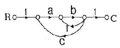
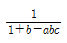
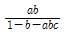
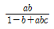
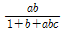
(정답률: 11%)
75. Y1(z)의 역 z 변환을 y1(R) Y2(z)의 역 z 변환을 y2(R)라 할 때, Y(z)=Y1(z)Y2(z)의 역변환은?
- y(R)=y1(R)y2(R)
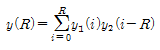
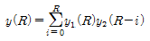
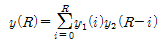
(정답률: 7%)
76. 다음의 논리 회로를 간단히 하면?
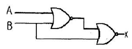
- AB
(정답률: 8%)
77. 다음은 근궤적을 그리기 위한 규칙을 나열한 것이다. 잘못 된 것은?
- 근궤적은 K=0일 때 극에ㅐ서 출발하고 K=∞일 때 영점에 도착한다.
- 실수축 위의 극과 영점을 더한 수가 홀수개가 되는 극 또는 영점에서 왼쪽의 실수축위에 근궤적이 존재한다.
- 극의 수가 영점 보다 많을 경우, K가 무한에 접근하면 근궤적은 점근선을 따라 무한원점으로 간다.
- 근궤적은 허수축에 대칭이다.
(정답률: 6%)
78. 온도 유량, 압력 등의 공업프로세스 상태량을 제어량으로 하는 제어계로서 프로세스에 가해지는 외란의 억제를 주 목적으로 하는 것은?
- 프로세스 제어
- 자동조정
- 서어보기구
- 정치제어
(정답률: 8%)
79. 2s3+5s2+3s+1=0로 주어진 계의 안정도를 판정하고 우반 평면상의 근을 구하면?
- 임계상태이며 허축상에 근이 2개 존재한다.
- 안정하고 우반평면에 근이 없다.
- 불안정하며 우반평면상에 근이 2개이다.
- 불안정하며 우반평면상에 근이 1개이다.
(정답률: 13%)
80. 에서 점근선의 교차점은?
- 2
- 5
- -2/3
- -4
(정답률: 6%)
5과목: 전기설비기술기준 및 판단기준
81. 가요전선관공사에 의한 저압 옥내배선의 방법으로 기술기준에 적합한 것은?
- 2종 금속제 가요전선관을 사용하였다.
- 옥외용 비닐절연전선을 사용하였다.
- 전선은 지름 5mm의 단선을 사용하였다.
- 가요전선관에 제1종 접지공사를 하였다.
(정답률: 6%)
82. 특별고압용 변압기의 냉각방식 중 냉각장치에 고장이 생긴 경우 또는 변압기의 온도가 현저히 상승한 경우라도 이를 경보하는 장치를 반드시 하지 않아도 되는 것은?
- 송유타냉식
- 수냉식
- 유입자냉식
- 송유풍냉식
(정답률: 8%)
83. 피뢰기를 반드시 시설하여야 하는 곳은?
- 옥외 배전용변압기의 2차측
- 지중전선로의 차단기와 부하 사이
- 가공전선로와 지중전선로가 접속되는 곳
- 발전소 소내 변압기의 2차측
(정답률: 12%)
84. 테이블 트레이공사에 사용되는 케이블 트레이는 수용된 모든 전선을 지지할 수 있는 적합한 강도의 것으로서 이 경우 케이블 트레이의 안전율은 얼마 이상으로 하여야 하는가?
- 1.1
- 1.2
- 1.3
- 1.5
(정답률: 5%)
85. 방전등용 변압기의 2차 단락전류나 관등회로의 동작전류가 몇 mA 이하인 방전등을 시설하는 경우 방전등용 안정기의 외함 및 방전등용 전등기구의 금속제 부분에 옥내 방전등 공사의 접지공사를 하지 않아도 되는가? (단, 방전등용 안정기를 외함에 넣고 또한 그 외함과 방전등용 안정기를 넣을 방전등용 전등기구를 전기적으로 접속하지 않도록 시설한다고 한다.)
- 25
- 50
- 75
- 100
(정답률: 8%)
86. 최대 사용전압이 22.9kV 인 중성선 다중 접지식 가공 전선로의 전로와 대지간의 절연내력 시험전압은 몇 V인가?
- 16488
- 21068
- 22900
- 28625
(정답률: 9%)
87. 보안공사 중에서 목주, A종 철주 및 A종 철근 콘크리트주를 사용할 수 없는 것은?
- 고압 보안공사
- 제1종 특별고압 보안공사
- 제2종 특별고압 보안공사
- 제3종 특별고압 보안공사
(정답률: 5%)
88. 22900V의 가공 전선로를 시가지에 시설하는 경우, 그 전선의 지표상의 높이는 최소 몇 m 이상이어야 하는가? (단, 전선으로는 나경동선을 사용한다고 한다.)
- 6
- 7
- 9
- 10
(정답률: 8%)
89. 고압 또는 특별고압과 저압의 혼촉에 의한 위험방지시설로 가공공동지선을 동복강선으로 사용할 경우 그 지름은 최고 몇 mm 이상이어야 하는가?
- 1.6
- 2.6
- 3.2
- 3.5
(정답률: 4%)
90. 22.9kV 가공전선로의 다중접지를 한 중성선은 어느 공사의 기술기준에 준하여 시설하는가? (단, 중선선 다중접지식의 것으로서 전로에 지기가 생겼을 때에 2초이내에 자동적으로 이를 전로로부터 차단하는 장치가 되어 있다고 한다.)
- 저압가공전선
- 고압가공전선
- 특별고압가공전선
- 가공공동지선
(정답률: 6%)
91. 조명용 백열전등을 설치할 때에는 타임스위치를 시설하여야 한다. 일반 주택 및 아파트 각 호실의 현관등은 몇 분 이내에 소등되는 것으로 하여야 하는가?
- 1
- 3
- 5
- 7
(정답률: 5%)
92. 인도교 위에 시설하는 조명용 저압 가공 전선로에 사용되는 경동선의 최소 굵기는 몇 mm 인가?
- 1.6
- 2.0
- 2.6
- 3.2
(정답률: 10%)
93. 사람이 상시 통행하는 터널안의 배선은 일반적인 경우 그 사용전압이 저압의 것에 한하여 시설하여야 한다. 시설방법이 잘못된 것은?
- 금속제 가요전선관공사로 시설
- 지름 1.6mm의 연동선 또는 동등 이상의 세기 및 굵기의 절연전선을 사용
- 애자사용공사시 전선의 노면상 높이는 노면상 2m로 시설
- 전로에는 터널의 인입구 가까운 곳에 전용의 개폐기를 시설
(정답률: 4%)
94. 345kV 가공전선이 건조물과 제1차 접근상태로 시설되는 경우 양자간의 최소 이격거리는 몇 m 이상이어야 하는가?
- 6.75
- 7.65
- 8.75
- 9.65
(정답률: 6%)
95. 옥내에 시설하는 저압전선으로 나전선을 절대로 사용할 수 없는 경우는?
- 금속덕트공사에 의하여 시설하는 경우
- 버스덕트공사에 의하여 시설하는 경우
- 애자사용공사에 의하여 전개된 곳에 전기로용 전선을 시설하는 경우
- 라이팅덕트공사에 의하여 시설하는 경우
(정답률: 6%)
96. 사용전압 440V인 이동 기중기용 접촉전선을 옥내에 시설하는 경우, 전선의 단면적은 몇 mm2 이상이어야 하는가?
- 22
- 28
- 32
- 38
(정답률: 2%)
97. 시가지에 시설되어 있는 가공 직류 전차선의 장선에는 가공 직류 전차선간 및 가공 직류 전차선으로부터 60cm이내의 부분 이외에 접지공사를 할 때, 제 몇 종 접지공사를 하여야 하는가?
- 제1종 접지공사
- 제2종 접지공사
- 제3종 접지공사
- 특별 제3종 접지공사
(정답률: 8%)
98. 고압 가공전선로의 경간은 지지물이 8종 철주로서 일반적인 경우, 몇 m 로 하여야 하는가?
- 250
- 300
- 350
- 400
(정답률: 7%)
99. “지중 관로”에 대한 정의로 옳은 것은?
- 지중 전선로, 지중 약전류전선로와 지중 매설지선 등을 말한다.
- 지중 전선로, 지중 약전류 전선로와 복합 케이블선로, 기타 이와 유사한 것 및 이들에 부속하는 지중함을 말한다.
- 지중 전선로, 지중 약전류전선로, 지중에 시설하는 수관 및 가스관과 지중 매설지선을 말한다.
- 지중 전선로, 지중 약전류전선로, 지중 광섬유케이블선로, 지중에 시설하는 수관 및 가스관과 기타 이와 유사한 것 및 이들에 부속하는 주중함 등을 말한다.
(정답률: 9%)
100. 고압 가공전선과 금속제의 울타리가 교차하는 경우 울타리에는 교차점과 좌, 우로 제1종 접지공사를 하여야 한다. 그 접지공사의 방법이 옳은 것은?
- 좌우로 30m 이내의 개소에 한다.
- 좌우로 35m 이내의 개소에 한다.
- 좌우로 40m 이내의 개소에 한다.
- 좌우로 45m 이내의 개소에 한다.
(정답률: 5%)